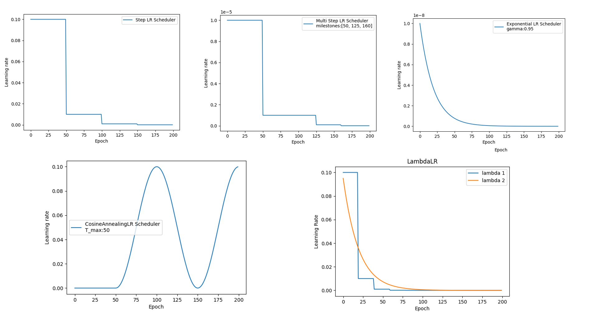
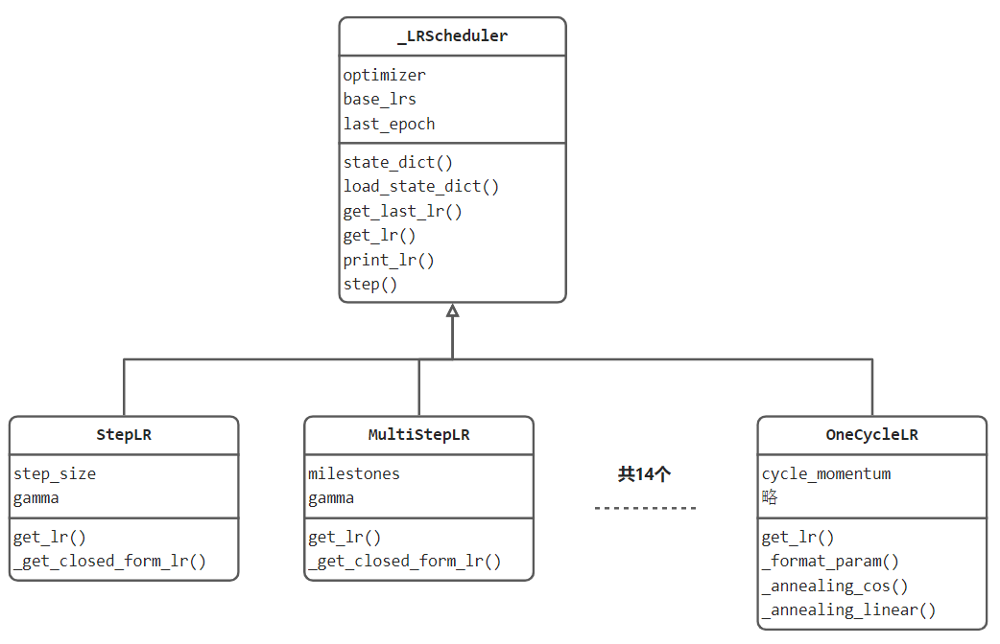

5.3 学习率调整策略

深度学习模型训练中调整最频繁的就属学习率了，好的学习率可以使模型逐渐收敛并获得更好的精度。
本小节将介绍pytorch提供的十四种学习率调整方法，首先了解lr_scheduler整体结构设计，然后以StepLR为例，深度剖析一个学习率调整器的源代码实现细节，最后总结十四个学习率调整策略。
lr_scheduler 设计
lr_scheduler模块的设计与优化器一样，定义了一个核心基类_LRScheduler，在_LRScheduler中设计好学习率调整器的属性与方法。

核心属性有optimizer、base_lrs和last_epoch。
optimizer是调整器所管理的优化器，优化器中所管理的参数组有对应的学习率，调整器要调整的内容就在那里。
base_lrs是基础学习率，来自于optimizer一开始设定的那个值。self.base_lrs = [group['initial_lr'] for group in optimizer.param_groups]
last_epoch是记录迭代次数，通常用于计算下一轮学习率。注意，默认初始值是-1，因为last_epoch的管理逻辑是执行一次，自加1。
核心方法有state_dict()、load_state_dict()、get_last_lr()、get_lr()、print_lr()、step()。
state_dict()和load_state_dict()分别是获取调整器的状态数据与加载状态数据。
get_last_lr()、get_lr() 分别为获取上一次和当前的学习率。
print_lr()是打印学习率。
step()为更新学习率的接口函数，使用者调用 scheduler.step()即完成一次更新。
lr_scheduler 使用流程
第一步：实例化。scheduler = optim.lr_scheduler.StepLR(optimizer, gamma=0.1, step_size=50)
第二步：合适的位置执行step()。大家要注意，不同的调整器的更新策略是不一样的，有的是基于epoch维度，有的是基于iteration维度，这个需要注意。
StepLR 源代码解读
StepLR是依据设定的step_size，以固定的间隔进行调整，调整规则为 lr_new = lr_old * gamma， 通常gamma设置为0.1，即一定次数训练后，学习率下降10倍。
下面观察代码，在代码104行与146行打断点进行调试，依次观察初始化过程、step更新过程。
初始化过程：
StepLR类__init__()函数：
self.step_size = step_size
self.gamma = gamma
super(StepLR, self).__init__(optimizer, last_epoch, verbose)
跳转到_LRScheduler类__init__()函数：
第一步：获取初始学习率：group.setdefault('initial_lr', group['lr'])
第二步：记录基础学习率：self.base_lrs = [group['initial_lr'] for group in optimizer.param_groups]
self.last_epoch = last_epoch
第三步：执行首次step()，也就是在初始化的时候会自动执行一次step（），这也是为什么last_epoch的默认值是-1的原因。
step中会进行第0个epoch的学习率获取，具体过程如代码所示：
torch/optim/lr_scheduler.py 151至168行
with _enable_get_lr_call(self):
if epoch is None:
self.last_epoch += 1
values = self.get_lr()
else:
warnings.warn(EPOCH_DEPRECATION_WARNING, UserWarning)
self.last_epoch = epoch
if hasattr(self, "_get_closed_form_lr"):
values = self._get_closed_form_lr()
else:
values = self.get_lr()
for i, data in enumerate(zip(self.optimizer.param_groups, values)):
param_group, lr = data
param_group['lr'] = lr
self.print_lr(self.verbose, i, lr, epoch)
self._last_lr = [group['lr'] for group in self.optimizer.param_groups]
step更新过程
在初始化过程已经进行过一次step，这里再仔细分析一遍。
首先通过154行代码，获取新一轮学习率 values = self.get_lr()
然后通过165行代码，对优化器中的学习率进行更新param_group['lr'] = lr
可以发现step()函数由基类_LRScheduler实现，即所有学习率调整器均采用这个流程，具体的一步更新策略则委托给子类的.get_lr()函数，这样的架构设计值得学习。
此处，关注的是StepLR，下面深入 StepLR.get_lr()函数观察。
if (self.last_epoch == 0) or (self.last_epoch % self.step_size != 0):
return [group['lr'] for group in self.optimizer.param_groups]
return [group['lr'] * self.gamma
for group in self.optimizer.param_groups]
可以看到，核心在两个return行。
第一个return表示未达到step_size，新学习率保持不变
第二个return表示达到step_size，学习率均需要乘以 gamma。
至此，整个学习率更新过程及逻辑讲解完毕，其余十三个学习率调整整体逻辑一样，均是step()与get_lr()的配合来实现学习率调整，请大家举一反三，自行深入研究其它调整器。
十四个调整器汇总
lr_scheduler.LambdaLR |
Sets the learning rate of each parameter group to the initial lr times a given function. |
|---|---|
lr_scheduler.MultiplicativeLR |
Multiply the learning rate of each parameter group by the factor given in the specified function. |
lr_scheduler.StepLR |
Decays the learning rate of each parameter group by gamma every step_size epochs. |
lr_scheduler.MultiStepLR |
Decays the learning rate of each parameter group by gamma once the number of epoch reaches one of the milestones. |
lr_scheduler.ConstantLR |
Decays the learning rate of each parameter group by a small constant factor until the number of epoch reaches a pre-defined milestone: total_iters. |
lr_scheduler.LinearLR |
Decays the learning rate of each parameter group by linearly changing small multiplicative factor until the number of epoch reaches a pre-defined milestone: total_iters. |
lr_scheduler.ExponentialLR |
Decays the learning rate of each parameter group by gamma every epoch. |
lr_scheduler.CosineAnnealingLR |
Set the learning rate of each parameter group using a cosine annealing schedule, where \eta{max}ηmax is set to the initial lr and T{cur}Tcu**r is the number of epochs since the last restart in SGDR: |
lr_scheduler.ChainedScheduler |
Chains list of learning rate schedulers. |
lr_scheduler.SequentialLR |
Receives the list of schedulers that is expected to be called sequentially during optimization process and milestone points that provides exact intervals to reflect which scheduler is supposed to be called at a given epoch. |
lr_scheduler.ReduceLROnPlateau |
Reduce learning rate when a metric has stopped improving. |
lr_scheduler.CyclicLR |
Sets the learning rate of each parameter group according to cyclical learning rate policy (CLR). |
lr_scheduler.OneCycleLR |
Sets the learning rate of each parameter group according to the 1cycle learning rate policy. |
lr_scheduler.CosineAnnealingWarmRestarts |
Set the learning rate of each parameter group using a cosine annealing schedule, where \eta{max}ηmax is set to the initial lr, T{cur}Tcu**r is the number of epochs since the last restart and T_{i}T**i is the number of epochs between two warm restarts in SGDR: |
小结
本小节通过lr_scheduler结构设计出发，分析十四个优化器是如何组织实现的，并通过_LRScheduler基类与StepLR的代码讲解学习率调整的机制。
总结下来即：初始化时建立scheduler与optimizer的联系，scheduler在每次step()时修改optimizer中的lr，step()获取新lr的功能委托给get_lr()函数实现。
最后对六个学习率调整器进行了测试并绘图，绘图代码位于配套代码